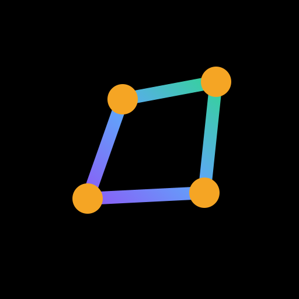

Step 1 · Map
Walk your boundary
The phone logs GNSS points into a polygon: area, perimeter, plant counts, seed and fertiliser quantities. Maps are cached while you have signal, so it works with none.
Works offline

Offline-first farm records
Map your farm by walking it, report problems where you see them, and turn living trees into verified carbon credits — on a phone, with or without a network.
Installs to your home screen · no account · no wallet · no fees
Three steps, all on the phone. No wallet, no fee, no signal needed until you publish.
Walk the boundary and mark each corner. Every GPS fix is scored for accuracy — anything worse than 50 m is refused.
Each record is hashed and signed with a key that stays on the device. Sealing groups records under one Merkle fingerprint.
Only the fingerprint is published to an append-only ledger. Anyone can re-check a record with its Merkle proof — online or off.
Verified pipeline
The complete carbon-monitoring chain — map, record, submit, verify, issue, and retire — runs today, offline, on a midrange Android phone.
The 5-step MRV & registry pipeline
The phone logs GNSS points into a polygon: area, perimeter, plant counts, seed and fertiliser quantities. Maps are cached while you have signal, so it works with none.
Scouting for pests, disease, water stress, weeds and nutrient deficiency, plus planting and harvest notes, pinned to location and signed on the phone the moment they are created. PIN-locked local keys mean no account or password in a cloud.
When three or more reports of the same problem land within 1 km over 14 days, a heat map and alert fire for the area.
Each submission carries a farm snapshot and an automated VIIRS fire check, with duplicate-plot detection guarding against double registration. NDVI trajectory (integrating) adds historical context once the provider is wired.
Accredited verifiers review the queue and sign approve or reject decisions with their own keys. A credit score gates what they can sign, and accreditation expiry rules are enforced.
Every event goes into an append-only, hash-chained ledger whose head is anchored externally to Solana, so nobody, including us, can rewrite history. Farmer records stay private; only aggregated carbon claims go public.
Approved lots get unique serials (PL-NG-00000001 and up), buyers place orders, and each retirement produces a certificate anyone can verify.
Market data, orders, reconciliation and verifier management in one place, with a versioned methodology registry (currently demo agroforestry, v1 & v2).
5,000 farms × ~0.5 ha × ~2 t CO2e/ha/yr is about 5,000 t. At ~$20/t nature-based removal pricing, that is a pilot built on real tonnes.
Two layers of identity
Plotline separates two things that are usually tangled together: who you are on this device and your server account. You can use the full farmer app with neither — but understanding both unlocks the whole system.
A cryptographic key generated on your phone the first time you open the app. It signs every record you create — farm boundaries, scout reports, tree plantings — so each one is traceable to you, even offline.
An optional username and password that lets the server know who you are across devices. Required to submit trees for carbon credit verification and to receive payouts.
One sign-in surface. All roles — farmers, verifiers, and admins — use the same login form. You can't tell from the login screen that privileged roles exist. Role-based redirection happens after you authenticate.
How roles are assigned and what they unlock
admin · password set by env var or operator token
Logged-in standard user submits verifier application in the Profile tab — name, organisation, qualification reason.
Admin reviews in the console and approves. A unique code like VACT-XXXX-XXXX is generated and sent off-band.
User enters the code in the Activate verifier role field. Their account upgrades immediately — new tabs appear on the spot.
Different access paths for farmers, independent verifiers, and programme operators.
Map your farm, scout the field, plant trees and send them for verification. No account needed — your signing key lives on your phone.
Sign upReview submissions, check the evidence, and sign decisions. Standard users can apply and activate verifier capabilities directly in the app.
Create an accountRegister projects, manage the submissions queue, issue credits, handle payouts, and audit everything.
Approved plots issue unique serial numbers — one per tonne of CO₂e. A sale splits automatically between farmer, community, verifier and platform, with holds for unsafe payout changes and a hash-chained audit log of every step.
Try the flow →